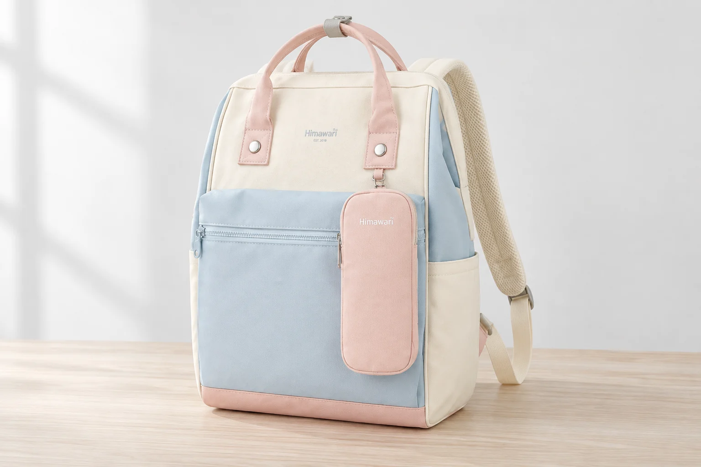
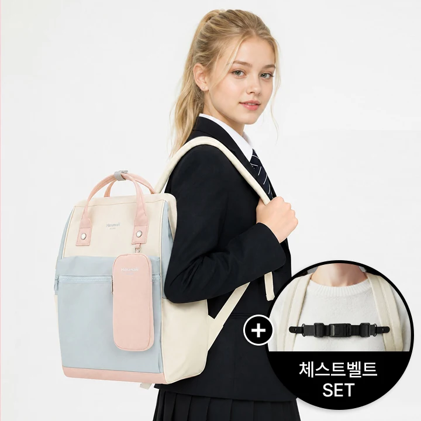
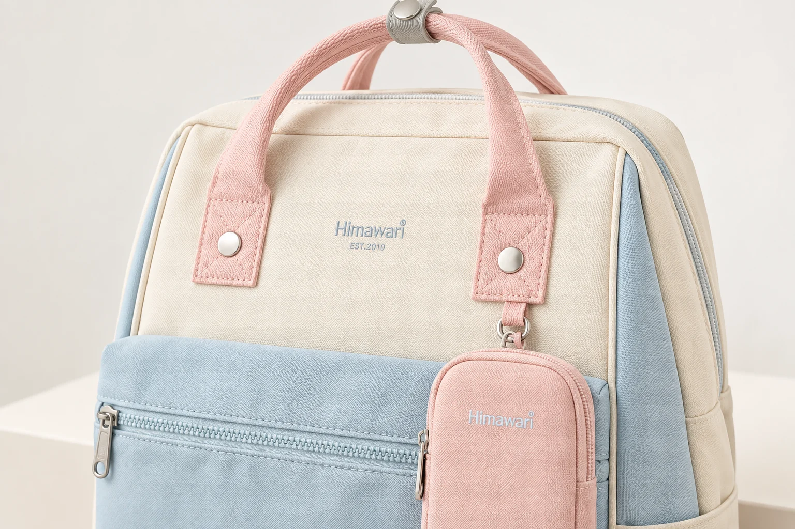

백팩의 체스트벨트 SET 표기, 색상 옵션과 어떻게 다를까

백팩을 검색하다 같은 모델 번호 뒤에 체스트벨트 SET이라는 말이 붙은 상품을 만나면 잠깐 멈추게 됩니다. 가방의 크기가 다른 것인지, 색 조합의 이름인지, 부속품을 함께 주는 구성인지 한눈에 구별되지 않기 때문입니다. 특히 여러 색을 한 페이지에서 고르는 상품은 긴 이름에 서로 다른 종류의 정보가 이어집니다. 비교할 때는 모델과 색, 함께 판매하는 부속품을 각각 따로 적어보는 편이 정확합니다.
히마와리 No.1027+체스트벨트 SET이 구체적인 예입니다. 현재 상품명에는 No.1027이라는 가방 모델과 체스트벨트라는 추가 구성품 이름이 함께 적혀 있습니다. 실제 대표 사진에도 검정 버클과 벨트가 별도 원형 이미지로 제시됩니다. 이것은 앞 포켓의 색을 설명하는 말과는 역할이 다릅니다. 다만 SET이라는 글자만으로 장착 방법이나 다른 백팩과의 호환성까지 알 수 있는 것은 아닙니다.
이름을 세 줄로 나누어 비교하기
첫 줄에는 가방 모델, 두 번째에는 선택한 색상, 세 번째에는 함께 받는 구성을 적습니다. No.1027이라는 번호가 같아도 세 번째 줄이 다르면 같은 구매 구성이 아닐 수 있습니다. 반대로 체스트벨트가 같고 가방의 배색만 달라진다면 구성품 수의 차이로 읽을 이유는 없습니다. 옵션 이름 전체를 보관해두면 나중에 대표 사진이 바뀌어도 무엇을 골랐는지 다시 대조할 수 있습니다.
예를 들어 파란 앞 포켓과 분홍 손잡이가 마음에 들어 후보로 골랐다면, 그 배색을 먼저 확인한 뒤 벨트 포함 여부를 별도로 읽습니다. 밝은 색 사진으로 형태를 보고 검정색을 선택하는 경우에도 마찬가지입니다. 사진 속 가방과 주문창의 색상 선택이 일치하는지, 선택한 항목이 SET인지 확인할 문제는 서로 다릅니다. 한 번에 확인하려다 보면 마음에 든 배색을 봤다는 기억이 구성 확인까지 대신하기 쉽습니다.
| 상품에서 읽는 정보 | 답하는 질문 | 함께 대조할 부분 |
|---|---|---|
| No.1027 | 어느 가방 모델인가 | 모델별 사양과 상세 사진 |
| 선택한 색상 | 어느 배색을 받는가 | 해당 색의 실제 제품 사진 |
| 체스트벨트 SET | 어떤 추가 구성을 고르는가 | 현재 구성 안내와 선택 항목 |

대표 사진에 보이는 물건을 모두 같은 방식으로 세지 않기
No.1027의 실제 사진에서는 긴 분홍 파우치가 가방 앞쪽에 달려 있고 체스트벨트는 별도 확대 이미지로 소개됩니다. 두 물건이 같은 사진에 등장하더라도 포함 근거를 확인하는 방식은 같습니다. 상품명에 적힌 벨트, 상세 설명에서 안내하는 파우치, 주변 촬영 소품을 각각 구별해야 합니다. 대표 사진의 면적이 크거나 가방에 붙어 보인다는 사실만으로 모든 옵션에 같은 수량이 들어 있다고 계산하지 않습니다.
상품 상세에는 탈부착 가능한 핸드폰 가방이 별도 항목으로 소개되어 있습니다. 이 설명으로 해당 부속의 존재와 소개 방식을 읽을 수 있지만, 다른 색상이나 다른 판매 항목의 구성을 자동으로 확정할 수는 없습니다. 구성을 비교할 때에는 지금 선택하려는 상품의 안내를 기준으로 삼습니다. 공통 상세 이미지가 여러 옵션에 사용되는 경우라면 현재 선택 항목의 포함 목록이 마지막 확인 자료가 됩니다.
연출 사진은 여기서 다른 역할을 합니다. 이 글의 AI 사진은 가방의 배색과 손잡이, 앞 포켓의 관계를 보기 위해 만든 이미지입니다. 실제로 배송되는 부속품을 모두 펼친 구성 증명 사진이 아닙니다. 세트에 무엇이 들어가는지는 실제 상품 사진과 구성 설명에서 확인하고, 가방의 모양이 마음에 드는지는 연출 장면도 참고하는 식으로 자료의 용도를 나누면 혼동이 줄어듭니다.

가방 기준 무게를 세트 전체 무게로 옮기면 생기는 차이
현재 No.1027 SET 제품 정보의 외부 크기는 가로 28, 세로 40, 폭 17cm이고 무게는 800g입니다. 사양의 측정 안내에는 이 수치가 가방 기준이며 추가 체스트벨트는 제외한다고 적혀 있습니다. 따라서 800g을 벨트까지 합친 전체 구성의 무게라고 소개하면 원래 설명과 달라집니다. 다른 상품과 숫자를 나란히 놓을 때에도 먼저 무엇을 잰 값인지 맞추어야 합니다.
세트가 아닌 후보와 비교한다면 가방 자체의 수치는 가방 자체끼리 봅니다. 실제로 들고 다닐 전체 무게가 궁금할 때에는 여기에 부속품과 자신의 짐이 더해진다는 별도 질문이 생깁니다. 벨트 무게가 기재되어 있지 않다고 임의의 몇 g을 더할 수는 없습니다. 외부 크기 역시 벨트 길이나 조절 범위를 알려주는 숫자가 아니며, 가방 폭으로 가슴 앞의 벨트 길이를 계산할 수도 없습니다.
겉감과 안감이 폴리에스터라는 현재 표기도 가방에 관한 정보로 읽습니다. 같은 페이지에 있다는 이유로 별도 벨트의 재질이나 버클 성분까지 같은 것으로 옮기지 않습니다. 가방과 추가 부속의 자료를 분리해 읽는 것은 정보가 적어서가 아니라, 서로 다른 물건의 설명이 한 화면에 놓여 있기 때문입니다. 필요한 정보가 어느 물건에 해당하는지만 분명히 해도 비교표의 빈칸을 잘못 채우는 일을 피할 수 있습니다.
이미 가진 벨트가 있다면, 포함보다 연결 방식을 묻기
체스트벨트는 양쪽 어깨끈 사이에서 사용하는 부속이므로 자신의 가방에 연결할 수 있는지가 중요합니다. 이미 별도 벨트를 가지고 있다면 새 세트를 고르는 이유가 달라질 수 있습니다. 그렇다고 모델 번호가 같아 보인다는 이유로 기존 부속을 반드시 재사용할 수 있다고 단정하지 않습니다. 연결할 어깨끈의 모습과 부속의 고정 방식, 현재 판매 구성의 안내를 함께 확인할 일입니다.
문의할 때에는 벨트가 있느냐는 질문 뒤에 연결 방법을 붙이면 답이 구체적입니다. 어느 위치에 어떤 방식으로 고정하는지, 설치 안내를 받을 수 있는지, 선택한 색상에도 같은 구성이 적용되는지 묻습니다. 착용 사진만 보고 조절 범위나 신체에 미치는 효과를 추정할 필요는 없습니다. 자기 어깨끈에 무엇을 연결하는지 이해한 뒤 구매 구성을 정하는 것이 이 비교의 목적입니다.
최종 후보를 남길 때는 No.1027, 선택 배색, 체스트벨트 포함이라는 세 항목을 다시 이어 읽습니다. 그다음 가방 기준 크기와 무게를 확인하면 이름이 길어도 비교할 정보가 흩어지지 않습니다. 세트라는 표현을 더 많은 기능을 뜻하는 말로 넓히지 않고, 함께 판매하는 구성을 가리키는 정보로 읽으면 필요한 부속을 중복해서 고르거나 빠뜨리지 않을 기준이 생깁니다.